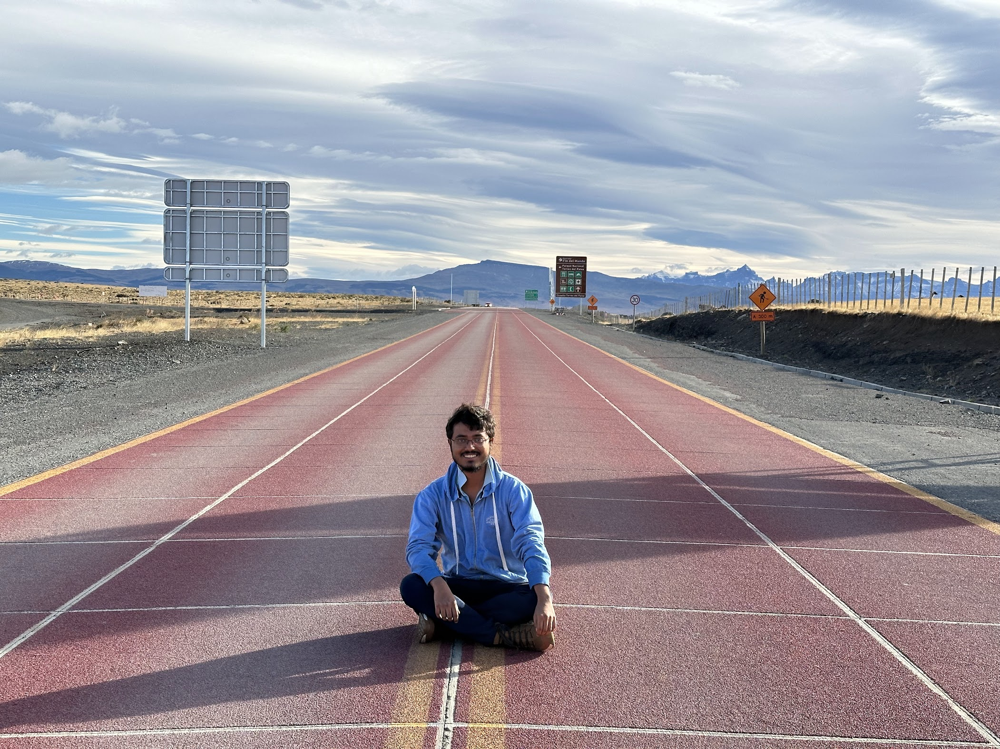

A Little About Me…
I am a PhD student in the Department of Industrial Engineering & Operations Research (IEOR) at Columbia University, advised by Prof. Henry Lam. My research focuses on uncertainty quantification and decision-making under uncertainty.
My academic background includes bachelor’s and master’s degrees in Statistics from the Indian Statistical Institute, Kolkata.
Most recently, I worked as a Quantitative Researcher Intern at Susquehanna International Group (SIG), where I developed and evaluated systematic equity trading strategies using signals derived from options-market data.
Previously, at Capital One, I modeled loan default rates and developed tools for handling missing values in decision-tree models. I also spent a summer at NASA Langley Research Center, working on multivariate flight-data modeling.
Outside work, I enjoy chess, table tennis, and puzzle solving. I also love to travel and often spend time on long walks through new neighborhoods, enjoying the opportunity to explore and observe everyday life in different places.
If you’re exploring robustness, data-driven optimization, quantitative finance, or adjacent topics, I’m always open to a conversation.